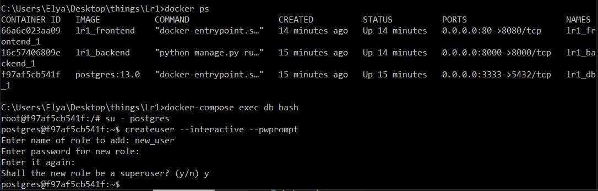
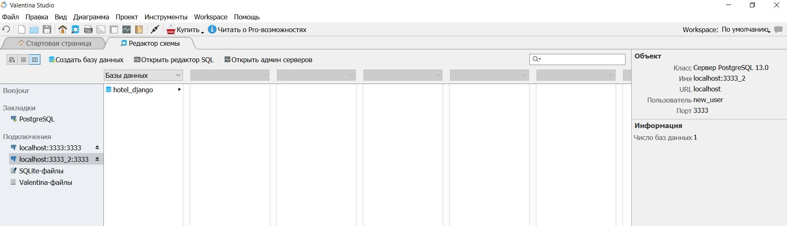

Задание:
- Реализовать работу в оркестре всех сервисов из 3 и 4 работы из курса "Web-программирование".
- Выполнить команды необходимые для того, чтобы добавить нового пользователя в БД Postgres. С попощью пользователя должна быть возможность подключиться к БД из приложения для работы с БД.
Frontend Dockerfile
FROM node:16.13
WORKDIR /app
COPY ./package.json ./
RUN npm install
COPY ./ ./
CMD ["npm", "run", "serve"] . .
# RUN npm run build
EXPOSE 8080
CMD npm run serve
Docker-compose file
version: '3.7'
services:
backend:
build: ./Backend/
command: python manage.py runserver 0.0.0.0:8000
volumes:
- ./Backend/:/app/
ports:
- 8000:8000
env_file:
- ./Backend/.env.dev
depends_on:
- db
frontend:
build: ./Frontend/
ports:
- 80:8080
depends_on:
- backend
db:
image: postgres:13.0
volumes:
- postgres_data:/var/lib/postgresql/data/
environment:
- POSTGRES_USER=postgres
- POSTGRES_PASSWORD=Artek1925
- POSTGRES_DB=hotel_django
ports:
- 3333:5432
volumes:
postgres_data:
Для подключения postgresql изменим конфигурацию в settings.py:
DATABASES = {
'default': {
'ENGINE': 'django.db.backends.postgresql_psycopg2',
'NAME': 'postgres',
'USER': 'postgres',
'PASSWORD': '*********',
'HOST': 'db',
'PORT': '5432',
}
}
Добавим нового пользователя в БД Postgres. С помощью пользователя есть возможность подключиться к БД из приложения для работы с БД (в данном случае - это Valentina DB).

Доступ к БД получен:
